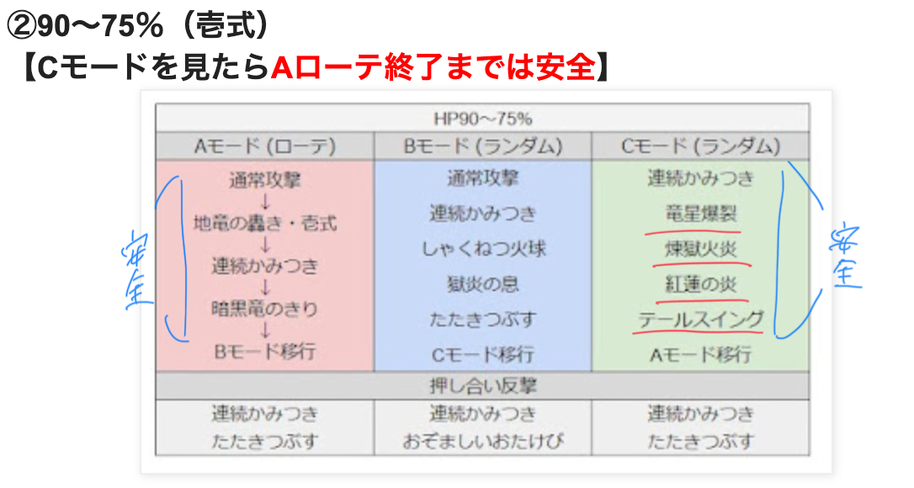
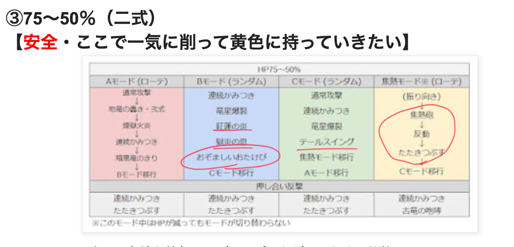
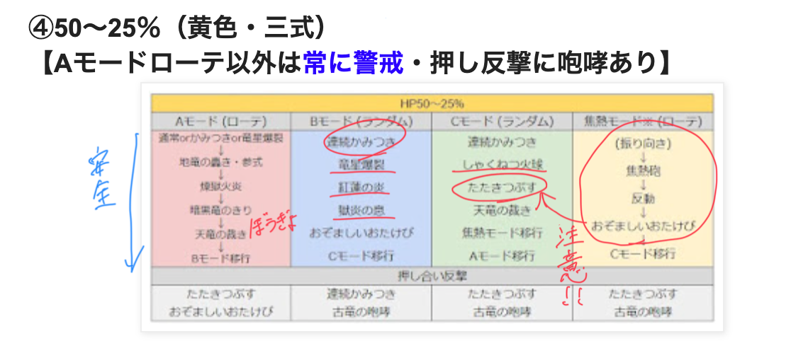
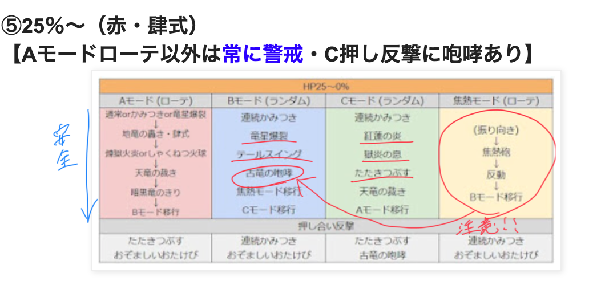

行動表へジャンプ
- ？？？系 特攻なし
- 弱点なし
- 構成
- 賢者 ヒーラー
- レンジャー
- 武闘家
- 魔法戦士
- その他実績のためにいろいろと！戦士とかもつよい！
- 各職行動
- 賢者
- ブーメラン,ブレス100
- ツッコミのタゲであることも忘れずに.
- レボルをFBとか武闘家の行雲流水とかに合わせる.
- 雨をキープする
-
雨がない時はぼうぎょしないと連続噛みつきを耐えれない.
-
FBにあわえて打てそうならドルマドンも. タイム実績目指すなら.
- レンジャー
- 爪.ブーメラン.まもりのきりをキープする.
- サマーソルトクローをFB,武闘家の行雲流水に合わせよう.
- 他のレボル系もどんどんうつ.
- ザオラルしてあげよう.賢者は雨と回復で忙しい.
- ラッシュ時にはライガークラッシュで火力出そう.
- アヌビス強い.チャージしたら叫んでシナジー合わせよう.
- 武闘家
- 爪.1人で全部削る勢いで.
- ツメ光ベルトがあると強い.
- タイガークローを一回でも多く打つ.
- 攻撃は絶対避けよう.死んだら時間かかる.
- 必殺技はあんまり強くない.殴ってた方が強い!
- 魔法戦士
- 片手剣.ライトフォース
- クロックチャージをレンジャー,賢者に.
-
鎧を着て壁を手伝う.
- ブレスガードがあると強い.
- マジックルーレット,エナジーフォール,マダンテもどんどん打とう.
- 必要装備
- 体上と盾ははブレス.
- 幻界王の首飾り,HPと弱体耐性のため.
- 封印,のろい,混乱,(おぞおた),幻惑(暗黒ブレス)
-
フワフワわたアメ
- 攻撃
- 通常攻撃→900くらい
- 連続かみつき→660 2回くらい 雨orぼうぎょがないと耐えられない
- テールスイング→ジャンプで避ける.当たるとやられる.
- 煉獄火炎→前方にブレスで3500ダメージ+やけど. きりがないと死ぬ.
- しゃくねつ火球→対象と周囲にブレス3000.
- 地竜の轟き・壱式→850くらいのダメージ+マグマ3個を設置. ジャンプで避ける.
- 暗黒竜のきり→対象方向に攻撃力2段階低下+守備力2段階低下+幻惑+ブレス耐性2段階低下+炎耐性低下
- たたきつぶす→周囲に約3620の2回ダメージ.ツッコミで避けよう.
- 焦熱砲→9999の2回ダメージ,りゅうおうは反動で動けなくなる
- 獄炎の息→前方にブレス+やけど+地面に帯状のマグマを設置（17秒程度で消滅）
- 紅蓮の炎→前方にブレス+地面に円形のマグマを設置（17秒程度で消滅）
- 竜星爆裂→対象と周囲に約500の2回ダメージ ジャッジメント.
- 地竜の轟き・弐式→周囲に約820～885ダメージ+マグマ3個を2回設置
- 天竜の裁き→4人とその周囲に約450の2回ダメージ
- おぞましいおたけび→周囲に約820～885ダメージ+呪文封印+特技封印+混乱+呪い
- 地竜の轟き・参式→周囲に約820～885ダメージ+マグマ3個を3回設置
- 地竜の轟き・肆式→周囲に約820～885ダメージ+マグマ3個を4回設置
- 古竜の咆哮→周囲に守備力0+ショック+良い効果をすべて消す+ブレス耐性2段階低下+炎耐性低下. りゅうおうはテンション1段階上昇,1人でも被弾すると追加で攻撃時HP回復+与ダメアップを得る. 絶対避けよう....
- HP60万
行動
100~90%
- 危険な技なし!ジャンプしながら脳死攻撃,反撃回避でOK!!
- かみつき,火炎ブレス,しゃくねつ火球,テールスイング
90~75%
地竜の轟き・壱式→連続噛みつき→暗黒竜のきり
- ここも安全!
- Aモードの間は脳筋でOK!
- Bはたたきつぶすがある,ツッコミ待機
- Cは危険な技なし!→竜星,煉獄,紅蓮,テールをみたら,Aの暗黒ブレスまで脳筋攻撃OK!

75~50%
地竜の轟き・弐式→煉獄火炎→連続噛みつき→暗黒竜のきり
- ABC全てに危険な技なし!
- ジャンプしながら殴るだけ!
- Bはおぞおたがあるのでちょっと警戒.
- 焦熱砲はC.振り向いたら警戒.反動の後はたたきつぶすがくる.殴りすぎ注意.

50~25%
地竜の轟き・参式→煉獄火炎→暗黒竜のきり→天竜の裁き
- 常に警戒!
- Aモードは一応安全だけど..
- Bは連続噛みつきがあるので,Aの最後の天竜は防御で耐えるといい.
- Bに危険な技はないけど,Cにたたきつぶすがあるので常に危険..
- B,Cの反撃に咆哮があるので,多めに距離を取る.
- 焦熱砲→おぞおた→たたきつぶすがありえる.怖すぎる.注意.
- Aに戻ったら脳筋殴り!!

25%~
地竜の轟き・肆式→炎ブレス→天竜の裁き(ジャッジ)→暗黒竜のきり
- A以外は常に警戒!
- Aの暗黒の霧までは脳筋で!
- Bに咆哮がある.前衛はツッコミ待機.
- 焦熱砲はBに戻ってくる.反動の後,咆哮の可能性もある.
- Cにたたきつぶす.裁き,炎ブレスはC
- Aに戻ったら脳筋でOK!
